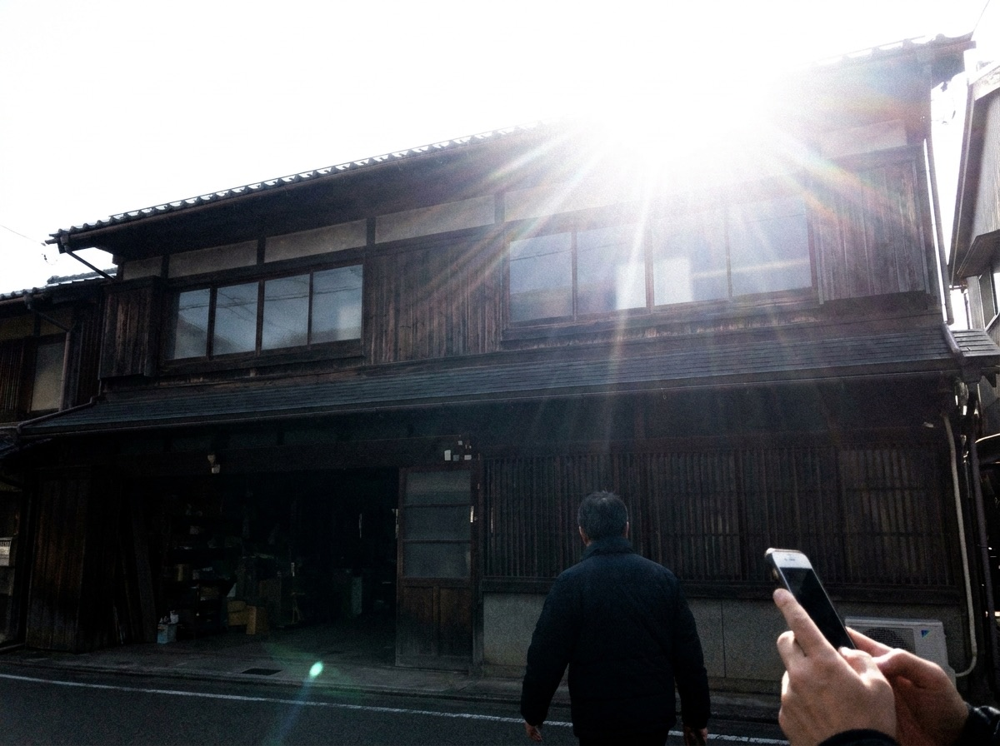
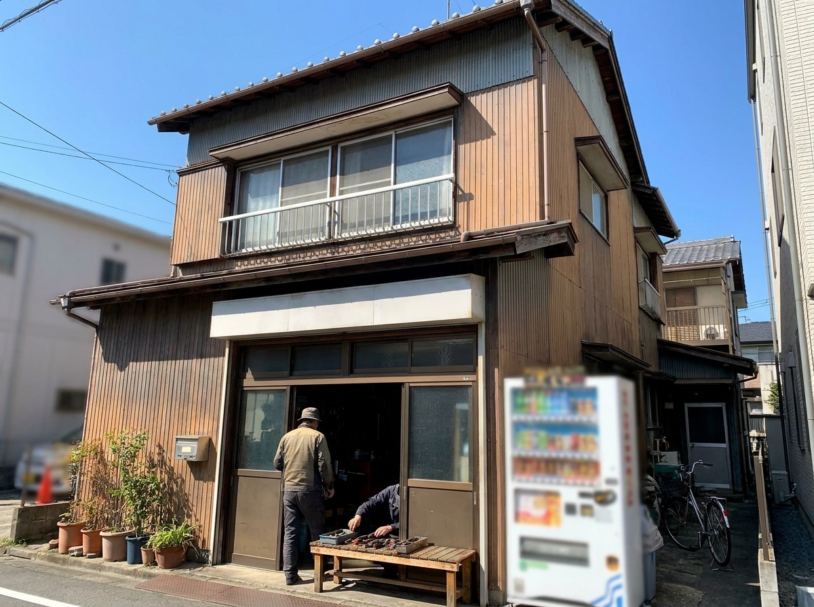
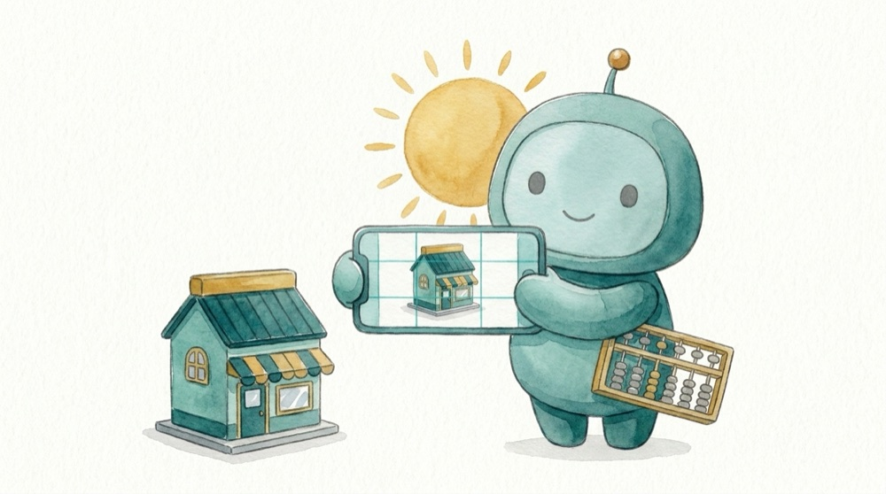
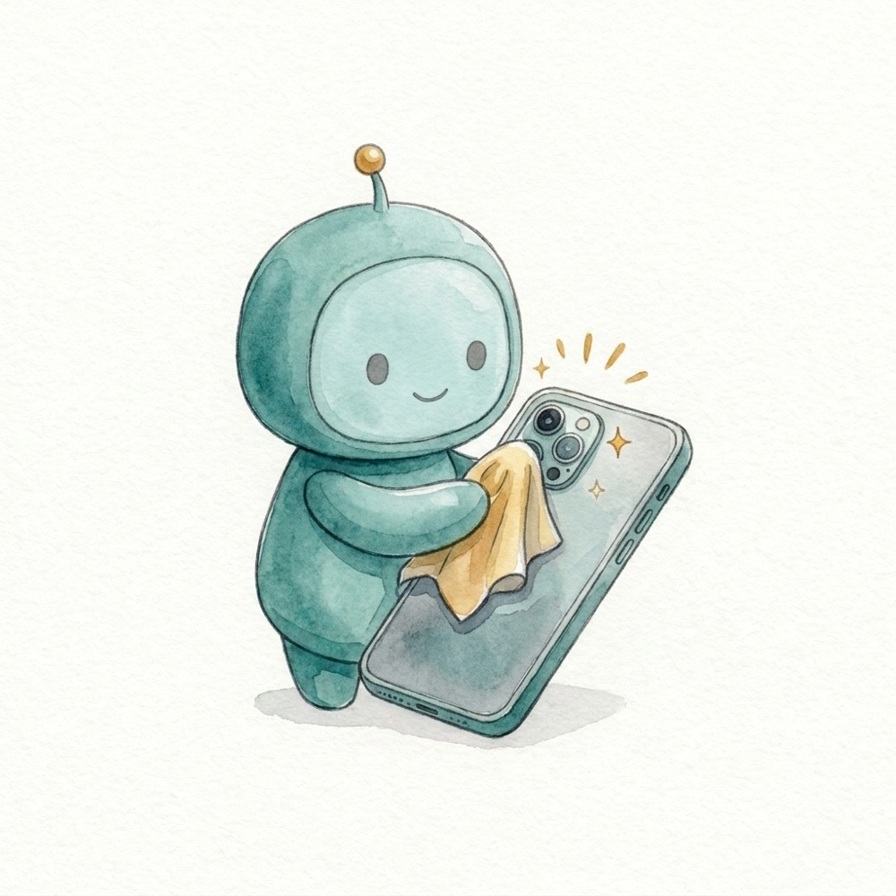
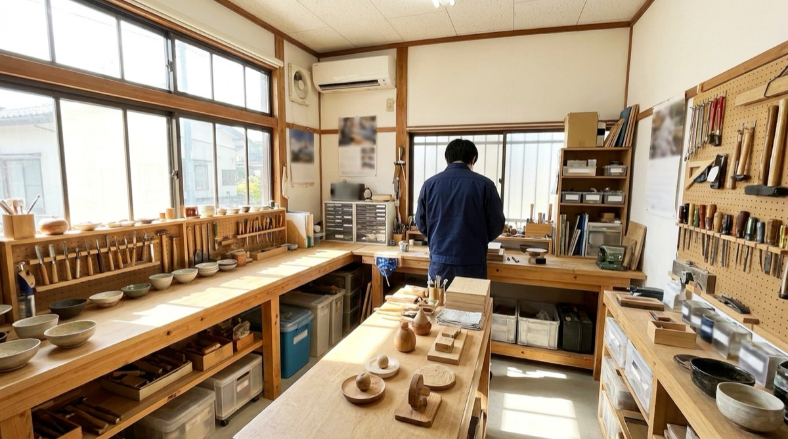
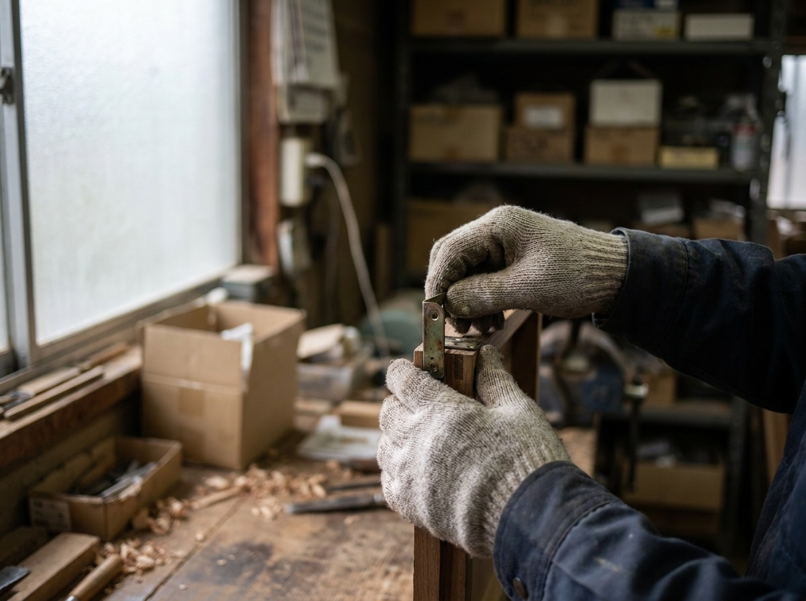

写真の撮り方
スマホで、会社の写真をきれいに撮るコツ
特別なカメラはいりません。3つ守るだけで、ホームページに載せられる写真になります。
まずは、この3つだけ
-
太陽を、自分の背中に
建物の向こう側に太陽があると、建物が真っ暗になります。太陽を背にして撮ると、色がそのまま出ます。外観は、晴れた日の午前か午後に。

× 太陽が向こう側 
○ 太陽が背中側 -
スマホは、横向きに
ホームページの写真は横長で使います。スマホを横にして、画面の線（グリッド線）に建物や水平線をそろえると、まっすぐな写真になります。線の出し方は下にあります。

-
レンズを、ひと拭き
ポケットに入れているスマホのレンズは、指のあぶらで曇っています。服のすそで軽く拭くだけで、写真がくっきりします。

スマホの設定（1回だけ）
お使いのスマホを選んでください。
- ① 画面に線を出す設定→カメラ→グリッド→オンカメラの画面に、9つに分ける線が出ます。
- ② 明るさを変える撮りたいところを指で軽くタップします。黄色い四角の横に出る太陽のマークを、指で上下になぞると明るさが変わります。
- ③ 広く撮る画面の下の「0.5」を押すと、狭い作業場も広く写ります（機種によっては、ありません）。
- ① 画面に線を出すカメラを開く→歯車のマーク（設定）→グリッド線（または補助線）→オンメーカーによって名前が少し違います。
- ② 明るさを変える撮りたいところを指で軽くタップします。出てくるつまみ（太陽のマーク）を動かすと、明るさが変わります。
- ③ 広く撮る画面の倍率から「0.5」や「0.6」を選ぶと、広く写ります（機種によっては、ありません）。
LINEで送ると、写真が少し小さくなることがあります。LINEの「設定」→「写真と動画」→「送信する写真の画質」を「高画質」にしておくと安心です。
何を撮ればいい？
迷ったら、この5つです。お顔を写さなくても、仕事の様子は伝わります。


写さないでほしいもの
- お客さまのお顔、車のナンバー、書類や画面の文字
- 写っている人には、ひと声かけてから撮ってください
うっかり写ってしまったときは、こちらで隠してから載せます。
撮れたら、送るだけ
LINEのメニュー「写真と一言を送る」から送ってください。枚数は何枚でも大丈夫です。
「いつ・どこの・何の写真か」を一言そえていただくと、そのまま説明文にします。LINEを使っていない方は、メールに添付してお送りください。